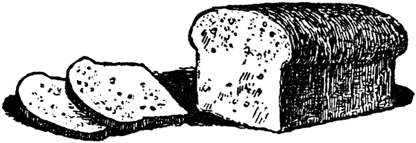
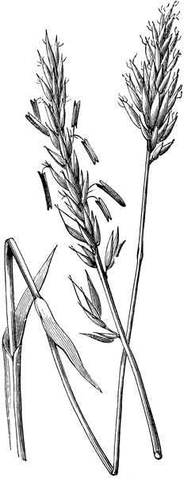

A lo largo de los siglos xix y xx se prepararon infinidad de recetas que incorporaron ingredientes procedentes de América y Europa. A los amasijos de queso, maíz y yuca, vinieron a unirse las preparaciones de la repostería y pastelería europeas.
Según el Diccionario de la Real Academia Española, esta palabra proviene del árabe hispánico almuhábbana «hecha de queso», y este del árabe clásico hubn «queso».
1 ½ kilo de cuajada fresca recién obtenida
½ libra de harina de trigo
1 libra de harina de maíz
2 huevos
7 gramos de sal
Suero
Se resoba la cuajada con la sal por unos 2 minutos. Se agregan las harinas y se vuelve a resobar. A continuación se añaden los huevos y de nuevo se resoba muy bien. Se agrega el suero necesario hasta obtener una masa homogénea pero húmeda. Se divide la masa en porciones de 130 gramos cada una. Se colocan en latas engrasadas y se hornean a 180°c por unos 20 minutos.
Se cuaja la leche y se exprime perfectamente la cuajada hasta que quede seca; se soba hasta que esté muy fina la masa. Para una manotada de cuajada en ambas manos se le pone una manotada cerrada de harina de maíz, una clara de huevo y un poquito de sal. Se hace con toda esa masa una sola almojábana sin apretarla ni alisarla. El horno como para torta.
Del recetario familiar
de Germán Pardo Rojas.
|
 |
Bizcochuelos de canela
palacinos y cubiertos
de un convento de hembras vino
tan azucarado obsequio.
Monseñor Juan Crisóstomo García
(1886–1967).
La variedad de bizcochuelos santafereños es inagotable. Para este apartado, hemos seleccionado algunas recetas encontradas en recetarios de finales de siglo xix y comienzos del xx, pertenecientes a Germán Pardo Rojas y parte de su patrimonio familiar.
Veinte huevos. Se baten aparte las claras y las yemas. Una libra de azúcar cernida. Una libra de sagú, [fécula] y el zumo de un limón. Cuando se vayan a meter al horno se mezclan primero las yemas con las claras. Luego la azúcar. Enseguida el sagú y el zumo del limón. Todo debe incorporarse perfectamente y meterse inmediatamente al horno.
16 huevos bien batidos, una libra bien larga de azúcar, libra y media de sagú. Se hace el almíbar que quede en punto de hoja gruesa; se le pone al batido un poco de aguardiente antes de echar las otras cosas; se mezcla todo y se mete al horno caliente.
Se pelan estas frutas, se deshacen y se ponen a secar al sol hasta que se puedan reducir a polvo. Se ciernen en un cedazo fino. Se baten 14 huevos con una libra de azúcar. Cuando esté espeso el batido se le ponen 14 onzas de harina de chontaduro o cachipay mezcladas con 4 onzas de harina de trigo. Se revuelve bien y se mete al horno en latas untadas de mantequilla.
Cuenta una carta de 1779 que por esas fechas la señora Ángela Isidra del Campo, en Popayán, mencionó en una reunión que pensaba celebrar la Nochebuena con buñuelos y pescado. Frente al escándalo de dos hombres, quienes juzgaron su elección de «corrupta y detestable» ante el ayuno que debía llevarse por esas fechas, doña Ángela se dirige a Don Felipe de Vergara y le pregunta si en Santafé es lícito cenar en Nochebuena con buñuelos y pescado. Don Felipe responde que esta cena no tiene nada de inconveniente y que quienes le han dicho que es corrupto olvidan las costumbres santafereñas, que no deben verse interferidas por las costumbres romanas. Así, parece ser que en Santafé ya es costumbre navideña la cena con buñuelos. (Consulta de Doña Angela... sobre si en Santafe sera o no licito cenar la Nochebuena y cenar buñuelos y pescado. Presentación y transcripción del manuscrito de 1799 por María del Rosario Aguilar Perdomo. Santafé de Bogotá: Instituto Caro y Cuervo, 1993).
[Para 8 raciones]
2 libras de queso fresco molido
4 huevos batidos
½ libra de harina de maíz
1 cucharada de almidón
Se revuelven todos los ingredientes hasta lograr una masa suave. Se forman bolitas con las manos húmedas. Se ponen en aceite no muy caliente y, cuando empiecen a crecer, se aumenta el fuego. Se dejan dorar y se escurren.
1 libra de harina de trigo
½ libra de chicharrones de entresijo
Corteza rallada de dos limones
¼ de panela en melado o 2 cucharadas de melaza
¼ de libra de queso campesino
3 cucharadas de mantequilla
3 cucharaditas de levadura seca derretida en un pocillo de agua tibia
Se deslíe la levadura en agua tibia y se deja aparte. Se ponen a derretir los chicharrones al fuego y se les saca la manteca. Después se muelen y se dejan aparte. Se mezcla la mantequilla con la panela y se le amasa la harina mezclando bien. Se le agrega el queso y los chicharrones molidos al final. Se arman las mogollas y se dejan crecer en un lugar tibio durante 45 minutos. Si tiene disponible al amasarlas, le agrega un pocillo «de los de tinto» con chicha de maíz.
1 libra de maíz porva
1 panela raspada
3 huevos
½ taza de leche o de natas de leche
¼ de libra de mantequilla de leche de vaca
Se mezcla la harina con la panela, la mantequilla, los huevos y la leche y se amasa bien, agregándole una «manotadita» de harina de trigo. Se deja reposar la mezcla. Se amasa en una tabla de madera con el rodillo y se hacen los bocaditos en forma de trapecio y con un tenedor se le hacen marcas. Se les espolvorea una pizca de azúcar corriente antes de hornear; dejarlas veinte minutos a 350°f en el horno precalentado.
½ libra de harina de trigo
½ taza de azúcar
3 huevos
½ taza de mantequilla
1 cucharadita de polvo de hornear
1 taza de coco rallado
½ taza de maicena al gusto
Se amasa la harina con la mantequilla y el azúcar; uno por uno se le agregan los huevos batidos, mezclando bien. Se le agrega el coco rallado y la maicena. Se sigue amasando hasta que quede una pasta suave. Se arman las galletas como bolitas. Para hornear se les barniza con clara de huevo y se les espolvorea coco rallado. Se hornean durante 15 minutos a 300°f.
Receta de las hermanas
Obando Galarza
Antes de despedirse, la mamá de Martha extraía un canasto del rincón más recóndito del pañolón, y del canasto quesos, garullas, y envueltos de mazorca. Nada podía gustarle más a mi papá que garullas calientes de la mamá de Martha Chaves a la hora del desayuno.
Daniel Samper Pizano.
«Alabanza agradecida del servicio
doméstico», Revista Diners,
julio de 1984.
½ libra de harina de maíz porva
135 gramos de harina de trigo
1 huevo
5 gramos de sal
1 kilo de cuajada muy fresca
Suero para remojar el amasijo
Se resoba la cuajada con la sal por unos 2 minutos. A continuación se agrega la harina de maíz y la harina de trigo y se vuelve a resobar para integrar muy bien los ingredientes. Luego se adiciona el huevo y de nuevo se resoba. Se moja la masa con suero suficiente hasta lograr una buena consistencia, ni muy seca ni muy húmeda. Se divide la masa en porciones de 90 gramos de forma esférica. Se reserva.
1 kilo de harina de maíz porva muy fina
½ libra de empella de cerdo
½ libra de mantequilla de sal
7 gramos de sal
Suero para el moje
Se mezclan las harinas. Enseguida se añade la empella de cerdo, la sal y un poco de suero, de nuevo se resoba para integrar muy bien los ingredientes y así obtener una masa un poco húmeda. Se reserva.
Se toma una porción de la masa «tapa» de unos 90 gramos aproximadamente en una mano, y con la otra se extiende a un grosor de 1 cm. Luego se envuelve la base con esta tapa, y se voltean y se colocan en latas engrasadas, a fin de que «revienten» en el momento del horneado. Bien formadas las garullas, se hornean a 200°c por unos 30 minutos o hasta que doren y «revienten». Se sacan del horno y se dejan reposar unos 15 minutos para encontrar el mejor sabor.
4 huevos
1 taza de maizena o harina de maíz
½ taza de harina de trigo
1 ½ tazas de azúcar corriente
¼ libra de mantequilla
2 copitas de aguardiente
1 cucharadita de sal
1 cucharadita de polvo de hornear
Se bate la mantequilla con el azúcar con un batidor o en batidora hasta que quede cremosa. Poco a poco le agregan las yemas de los huevos uno por uno, batiendo bien. Le agrega las harinas taza por taza batiendo muy bien. Aparte bate las claras a la nieve hasta que queden duras y eso se lo incorpora a la mantecada. Al final se agregan las copitas de aguardiente. Se hornea en una lata previamente barnizada con aceite y salteada con harina de trigo. Se pone la lata en el horno precalentado a 350°f, hasta que dore y que al introducir un cuchillo éste salga limpio. Se parte en tajadas; se ofrece con masato de arroz.

Cuenta Cecilia Restrepo en su libro La alimentación en la vida cotidiana del Colegio Mayor de Nuestra Señora del Rosario 1653–1773:
En 1567 Benito López hizo un pedimento sobre el aprovechamiento de un molino de Ubaté para proveer de trigo a los mineros de Muzo y se registra el cultivo de trigo por parte de los indígenas para elaborar la harina y, por lo tanto, el pan. Según el Papel Periódico Ilustrado, en sus «notas curiosas» dice que «Pedro Briceño hizo el primer molino de harina… y la primera que amasó pan fue Elvira Gutiérrez mujer de Juan Montalvo» en el Nuevo Reino.
El trigo es el ingrediente base de bizcochos, mojicones, roscones y numerosos panes que se consumen en la capital.
Mojicones dormidos
15 huevos, se baten bien, media libra de azúcar en polvo, media libra de mantequilla y manteca. La levadura se hace de un tanto de espesos y otro de agua de azúcar y media libra de harina. Esto se hace como a las 5 de la tarde para mojar a las 8 de la noche; se dejan bien blandos cuando se hagan; se deben dejar leudar bastante; para meterlos al horno se les unta huevo y azúcar por encima.
Del recetario familiar
de Germán Pardo Rojas.
3 libras de harina de trigo
¼ de libra de mantequilla
½ onza de sal
½ libra de azúcar
3 huevos
¼ de taza de levadura seca
Se prepara la levadura en media tacita (de las de tinto) con agua tibia. Se deja aparte y se deja crecer espuma. Luego se mezcla bien la mantequilla, azúcar, sal y la levadura. Se revuelve bien y se le agregan los huevos uno a uno. Poco a poco se le agrega la harina de trigo, taza por taza. Se deja reposar la masa por lo menos una hora en un lugar fresco. Cuando esté la masa lista se aprieta y se le saca el aire. Se hacen los mojicones del tamaño que se desee. Se dejan reposar para que crezcan antes de meter al horno, precalentado a unos 300°f por unos 45 minutos. Se hornean durante 40 minutos.
2 tazas de harina de yuca
¼ de libra de mantequilla
½ taza de azúcar
1 yema de huevo
1 copita de aguardiente
Se bate la mantequilla muy bien con el azúcar hasta que esté cremoso, se agrega la yema y la harina de yuca. Se mezcla hasta que quede una masa uniforme. Se agrega la copita de aguardiente. Se arman rollitos para hacer los panderitos. Se colocan en una lata engrasada y se barnizan con la clara de huevo sin batir. Se llevan al horno precalentado a 300°f, unos 20 minutos o hasta que doren.
1 libra de almidón de yuca agrio
1 libra de queso salado costeño molido
¼ de libra de margarina
5 huevos batidos
6 cucharaditas de azúcar
1 taza de leche
1 cucharadita de polvo de hornear
Se amasa todo muy bien en una artesa y si es necesario se le agrega más leche o más almidón de tal forma que quede una masa suave; se amasa unos 15 minutos. Se colocan en latas para hornear durante 20 minutos hasta que doren en horno precalentado de 350°f. La masa se puede guardar preparada en la nevera hasta una semana.
Principio para pandeyucas y almojábanas
Se hace un hoguito de huevo cocinado, arroz, miga, carne picadita y se condimenta bien; con esto se rellena pan de yuca y almojábanas; después de rellenos se ponen a conservar en una salsita blanca bien clarita o de tomate.
Del recetario familiar
de Germán Pardo Rojas.
De maíz amarillo y de maíz blanco
se hizo su carne; de masa de maíz se
hicieron los brazos y las piernas del
hombre. Únicamente masa de maíz
entró en la carne de nuestros padres…
Fragmento del Popol Vuh.
[Para 4 personas]
3 tazas de harina de maíz corriente, no precocido
1 cucharadita de sal
1 cucharadita de azúcar
½ libra de cuajada o de queso campesino
¼ de libra de mantequilla
Se amasan bien todos los ingredientes y se arman los panecitos en forma de trapecio. Se hornean a 350°f por unos 40 minutos y hasta que doren. Se guardan en tarros. Son deliciosos con aguadepanela caliente o con chocolate.
Cuenta Aida Martínez, en su libro Mesa y cocina en el siglo xix. Colombia, que buena parte de la pastelería y repostería capitalinas tuvieron una influencia francesa en la que contribuyó, de alguna manera, el general Francisco de Paula Santander. El prócer, desde su permanencia en Europa entre 1829 y 1832, quiso introducir tanto los usos y costumbres como las preparaciones francesas. A su regreso, cuando es llamado a ejercer la presidencia, viene con Pedro Napoleón Bonaparte, sobrino joven del emperador. Sabemos, por una carta enviada a su hermana Josefa y fechada el 28 de septiembre de 1832, de su deseo de organizar un banquete que complazca los gustos de su ilustre invitado, pues «la profusión que se acostumbra en nuestras comidas es chocante a los europeos y costosa».
Es la misma receta para la masa del mojicón (véase la receta en la página 99), horneada en forma de rosca, con relleno de bocadillo de guayaba.
Se hacen los roscones redondos del tamaño que se desee, colocándoles en el centro una cucharadita de jalea de guayaba bien espesa o un trozo de bocadillo de guayaba roja. Se dejan reposar para que crezcan 45 minutos antes de meter al horno. Horno de 300°f precalentado. 40 minutos.
Del recetario propiedad
de Germán Pardo Rojas.
Para ocho huevos batidos media libra de azúcar, media libra de almidón de achiras sin tostar. El almidón de maíz que le entre. Cuatro onzas de empella y cuatro onzas de res derretida. El horno como para bizcochuelo. Se le unta clara y azúcar. La masa bien seca.
Se soban mucho cinco onzas de mantequilla con una de manteca. Cuando ya esté blanco se le pone media libra de azúcar. Se sigue sobando y se le van poniendo cuatro huevos. Se le van metiendo poco a poco dos libras de harina y cuatro huevos mal. En total son ocho huevos. Se refriegan bastante con la mano extendida. Se hacen las rosquitas y se sancochan en agua hirviendo. Se cortan y se ponen al horno no muy fuerte. Se cubren con almíbar espeso y se ponen a secar al sol.
[Para 8 personas]
2 tazas de harina de trigo
1 taza de leche agria
2 huevos batidos
Cucharadas de azúcar
Aceite
Se mezcla todo, se bate hasta que quede una colada fina, se van sacando cucharadas y se fríen en aceite caliente hasta que doren.
10 almojábanas de Soacha (Cundinamarca)
o de Paipa (Boyacá), frescas
1 taza de leche
2 huevos
½ taza de azúcar
1 cucharadita de vainilla
1 cucharadita de aceite
½ cucharadita de polvo de hornear
½ cucharadita de bicarbonato
Se colocan todos los ingredientes en la licuadora hasta que mezclen bien. Se engrasa un molde de torta y se pone allí la masa. Se precalienta el horno a 350°f; se coloca el molde unos 45 minutos hasta que la punta de un cuchillo salga limpio.
1 libra de cuajada fresca
2 huevos
1 taza de maicena
½ taza de azúcar
1 cucharadita de aceite
1 cucharadita de polvo de hornear
Se colocan todos los ingredientes en la licuadora hasta que mezclen bien. Se engrasa un molde de torta y se pone allí la masa. Se coloca en un horno precalentado a 300°f durante 45 minutos, hasta que la punta de un cuchillo salga limpio.
Por eso manda Napoleón Tercero
a tanto ruin y puerco pastelero.
Ángel Cuervo. La dulzada, 1867.
4 tazas de pan rallado
1 taza de leche
¼ de taza de azúcar
½ taza de queso campesino o cuajada rallada
2 cucharadas de mantequilla
1 cucharadita de polvo de hornear
1 pizca de sal
½ cucharadita de esencia de vainilla
¼ de cucharadita de canela en polvo
½ taza de uvas pasas
Se mezclan todos los ingredientes en un recipiente. Se engrasa un molde y se vierte la mezcla. Se añaden las uvas pasas. Se pone en el horno precalentado a 300°f unos 45 minutos, hasta que la punta de un cuchillo salga limpia. A falta de horno, puede ponerse a asar a fuego muy bajo la mezcla en un sartén con mantequilla. Se deja cocinar y se voltea hacia el otro lado.
4 plátanos maduros
1 taza de leche
½ taza de queso campesino rallado
½ taza de azúcar
2 huevos
1 pizca de sal
1 cucharadita de polvo de hornear
2 cucharadas de mantequilla
Se cocinan con cáscara los plátanos hasta que estén blandos. Se pelan y se «machacan». Se mezclan todos los ingredientes muy bien y se coloca en un molde engrasado. Se mete en el horno a 350°f hasta que salga limpio un cuchillo, como en la torta anterior. Puede añadírsele a la mezcla trozos de bocadillo de guayaba derretido y, como en la anterior, también puede prepararse asada.
Ponqué negro
Media libra de azúcar, un cuarto de mantequilla, media libra de harina de trigo, cuatro huevos, una cucharada de polvo para hornear, una cucharada de bicarbonato de soda, clavos, nuez moscada, pasas de Corinto. Se cierne la harina con el bicarbonato y el polvo para hornear. Se baten las yemas y se mezclan con la harina y el azúcar, hasta que la mezcla, a fuerza de batirla, queda en estado cremoso. Se le agregan las especies dichas. Las pasitas se envuelven en harina para que no se vayan al fondo, se le añaden las claras a punto de nieve, se le pone color negro bien cargado. Se echa en el molde bien untado de mantequilla y se mete al horno (que debe conservarse con un calor muy parejo). El color se prepara de la siguiente manera: se deja quemar una panela hasta que dé color negro.
Recetario de Maria Teresa Gómez.
1 ½ libras de mantequilla
1 libra de azúcar
1 libra de harina de trigo
½ libra de ciruelas pasas sin semilla
½ libra de uvas pasas
¼ libra de nueces surtidas
¼ libra de almendras peladas (se pelan con agua caliente)
1 frasco de brevas en almíbar picadas en pedacitos
1 cajita de fruta cristalizada
10 huevos
2 cucharadas de polvo para hornear
1 cuharadita de canela molida
1 cucharadita de nuez moscada molida
1 cucharadita de clavos de olor
1 taza de vino y un poco más de vino moscatel
1 cucharadita de esencia de vainilla
1 pizca de sal
Se bate el azúcar con la mantequilla. Cuando esté cremoso se le agregan los huevos. Después, se le agrega el vino licuado con las uvas pasas, la vainilla, la canela, la nuez y los clavos. Se agrega esto, luego la harina, alternando, y así todos los ingredientes.
Nota: Las brevas se pican y el almíbar se añade a la mezcla. Las ciruelas pasas no se añaden al licuado.